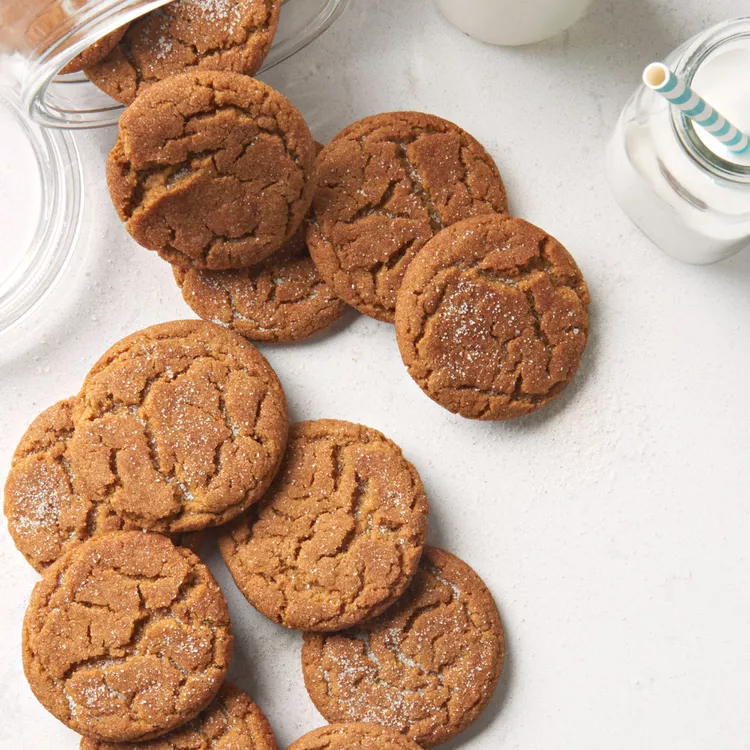

Grandma's Gingersnap Cookies
Home

This recipe for gingersnaps makes gingersnap cookies that melt in your mouth!
I received this ginger cookie recipe from my grandmother; it's been enjoyed in my family since 1899.
Store cookies in an airtight container.
Ingredients:
- 1/3 cup cinnamon sugar
- 2 cups sifted all-purpose flour
- 1 tbsp ground ginger
- 2 tsp baking soda
- 1 tsp ground cinnamon
- 1/2 tsp salt
- 3/4 cup butter
- 1 cup white sugar
- 1 large egg
- 1/4 cup dark molasses
Directions:
- Gather all ingredients. Preheat the oven to 350 degrees F (175 degrees C). Place cinnamon sugar in a bowl; set aside.
- Sift flour, ginger, baking soda, cinnamon, and salt into a mixing bowl. Stir the mixture until blended, then sift a second time into another bowl.
- Beat butter in a large bowl with an electric mixer until creamy. Gradually beat in white sugar. Add egg and molasses and beat until light and fluffy.
- Sift 1/3 of the flour mixture into the butter mixture; stir to thoroughly blend. Sift in the remaining flour mixture and mix together until a soft dough forms.
- Pinch off small amounts of dough and roll them with your hands into 1-inch-diameter balls.
- Place balls in cinnamon sugar and roll to coat, then place 2-inches apart on ungreased baking sheets.
- Bake in the preheated oven until tops are rounded and slightly cracked, about 10 minutes, switching racks halfway through. Cool cookies on a wire rack.